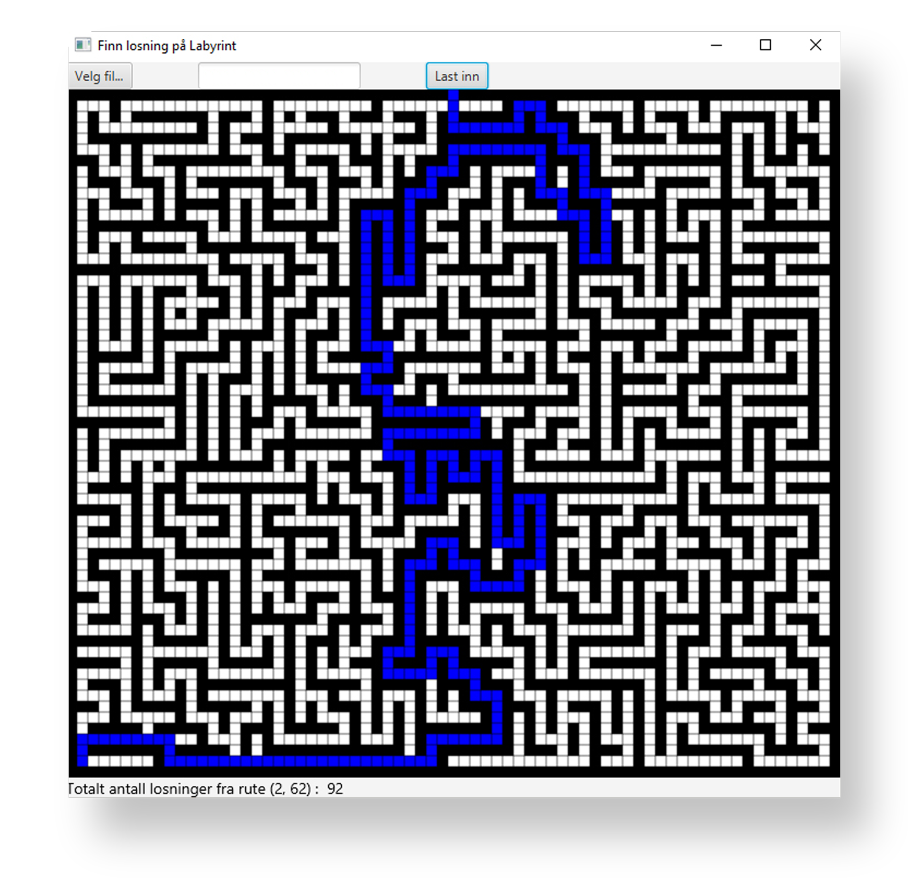

Labyrint
Program skrevet i Java
Studentprosjekt ved UiO, vår 2017
Kontekst og omfang
Programmet, som er skrevet i Java, ble laget i forbindelse med gjennomføring av emnet INF1010 – Objektorientert programmering. Oppgaven gikk ut på å bruke rekursjon til å finne eventuelle utveier fra en bestemt rute i en asyklisk labyrint. Ved bruk av teknikken rekursiv tilbakesporing ble programmet utvidet til å finne alle utveier også i sykliske labyrinter. Programmet ble i tillegg utvidet til å finne den (eller én av de) korteste utveien(e) (hvis det finnes noen utveier) fra en rute. JavaFX ble brukt for å lage et grafisk brukergrensesnitt (GUI) for labyrintprogrammet.

Figur: Programmet finner alle eventuelle utveier fra en gitt rute i en syklisk eller asyklisk labyrint.